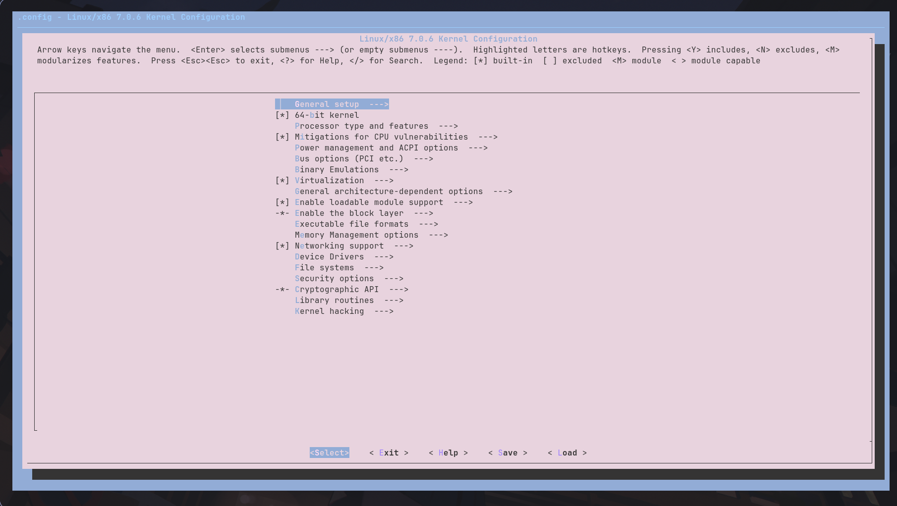

tutorial ini lebih kearah basic dan di tulis dengan cepat jadi nggak menampung semuanya, gua juga masih belajar dawg
tapi seharunya tutorial ini nggak terlalu sulit bahkan PRABOWO sendiri pun "mungkin" bisa melakukannya...
DISCLAMER: Tutorial ini akan menggunakan GCC sebagai compiler
linux punya pre-compiled kernel linux yang di-distribusikan ke distro-distro
setiap kernel memiliki kelebihan dan kekurangan masing-masing tergantung bagaimana seseorang meracik kernel tersebut dan mengoptimiasasinya
contoh kernel linux yang biasanya di termukan pada banyak distro:
linux : kernel vannila tanpa adanya modifikasi distributor atau komunitas
linux-zen : kernel yang berfokus ke peforma dan tidak peduli efesiensi
linux-hardened : kernel yang berfokus pada keamanan, kernel ini biasanya hanya di gunakan pada server
Dalam membangun kernel linux sendiri terdapat beberapa versi diantarnya adalah : MAINLINE/STABLE/LONGTERM
mainline adalah versi yang sedang di test dan dalam pengembangan
stable adalah versi stabil terbaru dengan good stuffs yang telah selesai dalam masa percobaan
longterm adalah versi tua yang sangat stabil, versi ini biasanya di perbarui dalam bentuk keamanan dan patch penting saja
Gua saranin untuk milih versi stable
Download tarball linux kernel DISINI
Sebelum membangun kernel sendiri, diperlukan beberapa dependensi
Pada Arch
setelah mendownload kernel source linux, buat workspace untuk kernel, kalo kernel source di Downloads lu bisa ikutin command di bawah
CATATAN : TANDA "*" ARTINYA MENGOPERASIKAN SEMUA YANG ADA, JIKA LU PUNYA BEBERAPA HAL DENGAN NAMA YANG SAMA DENGAN AWALAN SEBELUM "*" (LINUX), MAKA SEMUANYA AKAN IKUT DI EKSEKUSI!
setelah selesai ekstraksi, masuk ke folder source kernel dan jalankan terminal di folder tersebut
membangun kernel itu seperti memasak, LET HIM COOK!, kita perlu bahan, alat dan panduan.
bahannya adalah kode source, alatnya adalah compiler, panduannya adalah apa saja yang perlu dimasukan
kita udah punya dua hal, hanya butuh panduan dalam memasak kernelnya, lu bisa membuat panduan sendiri kalo lu adalah seorang koki yang tahu apa yang kau lakukan, tapi kali ini kita akan menggunakan panduan yang udah ada di dalam sistem kita
untuk mendapatkan panduan yang sudah ada di dalam sistem kita saat ini
selamat lu udah dapat panduan untuk kernel lu, hanya saja panduan ini sangat bloated like YOUR MOM, karena di dapatkan dari kernel yang berjalan sekarang, gua prediksi lu masih make kernel dari distro, tapi untuk sekarang good enough
akhirnya yang paling di tunggu-tunggu, KUSTOMISASI, aaahhhhhhhhh tangan ku udah gak sabar buat kustomisasi...
untuk mengkostumisasi kernel

cara navigasi:
↑ dan ↓ : navigasi ke atas atau kebawah
<- dan ->: navigasi pilihan bawah menu
/ : mencari sesuatu
h : tolong (kaki saya sakit)
y dan n : y adalah ya masukan, n adalah gak jangan masukkan >\\\<
m : ya tapi jadiin module saja (berbeda dengan y, m tidak lansung berjalan saat boot kecuali di panggil)
untuk mengganti nama kernel, pergi ke
General Setup > Local version - append to kernel release
contoh penulisan nama : -Dengan-ini_SAYA-AKAN-LAWAN-v1
Gua tidak menyarankan menggunakan karakter selain angka dan huruf karena bisa buat compile gagal
setelahnya... yeah... terserah lu mau ngapain sih...
kalo sudah merasa cukup kustomiasasi, save config lu
karena waktunya MEMASAK
KOMPILE KERNEL
ini akan memakan waktu yang cukup lama karena panduan yang di gunakan sangat bloated seperti YOUR MOM
setelah kernel berhasil di kompile, waktunya menginstall kernel
ambil kernel release (jika shell lu bash/zsh)
ambil kernel release (jika shell lu fish)
Install kernel
Install module
Install header (via sysmlink)
menambahkan preset mkinitcpio
update mkinitcpio
update grub
SELAMAT ANDA TELAH BERHASIL MENGCOMPILE DAN MENGINSTALL KERNEL DI ARCH
reboot komputer lu dan pilih opsi ke 2 untuk melihat dan memilih entry kernel
setelah berhasil booting, jangan lupa untuk menginstall driver-driver luar (jika ada)
contoh driver luar : nvidia
kernel yang bukan vannila perlu membuild ulang driver luar
Maaf saat ini kustomisasi lainnya akan berada di page lain karena topik ini sangat panjang dan rabbit hole yang sangat dalam